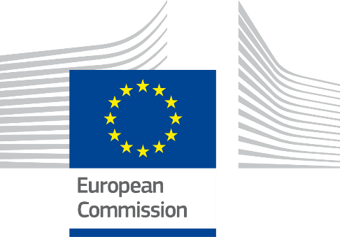

Table of Contents
Table of Contents
Table of ContentsDigital Public Administration factsheet 2023
Cyprus
1 Interoperability State-of-Play 4
2 Digital Public Administration Political Communications 8
3 Digital Public Administration Legislation 21
4 Digital Public Administration Infrastructure 26
5 Digital Public Administration Governance 45
6 Cross border Digital Public Administration Services for Citizens and Businesses 48

1
Interoperability
State-of-Play
In 2017, the European Commission published the European Interoperability Framework (EIF) to give specific guidance on how to set up interoperable digital public services through a set of 47 recommendations divided in three pillars. The EIF Monitoring Mechanism (MM) was built on these pillars to evaluate the level of implementation of the framework within the Member States. Whereas during the previous, the MM relied upon three scoreboards, the 2022 edition includes an additional scoreboard on cross-border interoperability, assessing the level of implementation of 35 Recommendations. The mechanism is based on a set of 91 Key Performance Indicators (KPIs) clustered within the four scoreboards (Principles, Layers, Conceptual model and Cross-border interoperability), outlined below.
Source: European Interoperability Framework Monitoring Mechanism 2022
Each scoreboard breaks down the results into thematic areas (i.e. principles). The thematic areas are evaluated on a scale from one to four, where one means a lower level of implementation and four means a higher level of implementation. The graphs below show the result of the EIF MM data collection exercise for Cyprus in 2022, comparing it with the EU average as well as the performance of the country in 2021.
Source: European Interoperability Framework Monitoring Mechanism 2022
Cyprus’ results in Scoreboard 1 show an overall good implementation of the EIF Principles, scoring above the European average for several Principles such as Principle 4 (Reusability) and 12 (Assessment of Effectiveness and Efficiency). In addition, the implementation of the recommendations relating to principle 3 (Transparency) and principle 10 (Administrative simplification) led to an increase in Cyprus' score from 3 to 4 in 2022. However, the areas for improvement are concentrated on Principle 1 (subsidiarity and proportionality), where the score of 3 is below the EU average as well as on Principle 9, where the score went from 4 to 3 in 2022. More specifically, Cyprus should further ensure that national interoperability frameworks and interoperability strategies are aligned with the EIF and, if needed, tailor and extend them to address the national context and needs (i.e. Recommendation 1) and should further use information systems and technical architectures that cater for multilingualism when establishing a European public service (i.e. Recommendation 16).
Source: European Interoperability Framework Monitoring Mechanism 2022
The Cypriot results for the implementation of interoperability layers assessed for Scoreboard 2 show an overall good performance with only scores of 4 in line with the European average. The very good implementation of the recommendations for the legal interoperability layer led Cyprus to get the score from 1 to 4 in 2022. As regards areas for improvement, Cyprus could focus on interoperability governance. In particular, the consultation of relevant catalogues of standards, specifications and guidelines at national and European level, in accordance with your NIF and relevant DIFs, when acquiring and developing ICT solutions (i.e. Recommendations 23) and the active participation in standardisation work relevant to your needs to ensure your requirements are met (i.e. Recommendation 24) could be a priority. However, it should be noted that the score of 2 and 1 respectively does not affect the final score of the layer.
Source: European Interoperability Framework Monitoring Mechanism 2022
Cyprus’ scores assessing the Conceptual Model in Scoreboard 3 show an overall good performance in the implementation of all recommendations, aligned with the European average. The implementation of the recommendations of the conceptual model and catalogues leads to a score above the EU average in 2022. In terms of areas for improvement, Cyprus could further use external information sources and services while developing European public services (External information sources and services – Recommendation 45) as well as use trust services according to the Regulation on eID and Trust Services as mechanisms that ensure secure and protected data exchange in public services (Security and Privacy – Recommendation 47).
Source: European Interoperability Framework Monitoring Mechanism 2022
The results of Cyrpus concerning Cross-border Interoperability in Scoreboard 4 show an at least upper-middle performance of the country in 16 indicators. However, Cyprus has still margin for improvement in relation to three indicators where the country obtains a low performance. For instance, efforts could focus on the simplification of processes and use digital channels whenever appropriate for the delivery of European public services, to respond promptly and with high quality to users’ requests and reduce the administrative burden on public administrations, businesses and citizens (i.e. Recommendation 17) and on the development of a shared infrastructure of reusable services and information sources that can be used by all public administrations (i.e. Recommendation 36).
Additional information on Cyprus’ results on the EIF Monitoring Mechanism is available online through interactive dashboards.
Curious about the state-of-play on digital public administrations in this country? Please find here some relevant indicators and resources on this topic: |

2
Digital Public Administration Political Communications
Digital Strategy 2020–2025
A new holistic Digital Strategy 2020–2025 has been elaborated and is at execution stage, the Council of Ministers and the Minister of Research, Innovation and Digital Policy (DMRID) being the competent executive bodies for its deployment. The strategy has a solid governance and KPI metrics to safeguard its proper execution; 2021 was acknowledged as a pivotal year for enhanced digital fitness of the society, the entrepreneurial landscape and eGovernment transformation. The national strategy for digital transformation includes the following pillars:
Digital Public Services
The Cypriot government has built a new delivery model for the development of end-to-end quality digital services, i.e. the Digital Services Factory (DSF) model, aiming to improve the quality of life for citizens and businesses by providing 100% of public services online. The provision of digital services to the public in a user-friendly, efficient and effective way will ultimately facilitate the interaction with public services, without the need for physical presence. The DSF will develop advanced digital services following an Agile/Scrum methodology, through the redesigning and reengineering of procedures, and following a path that provides adaptability, response to change and is based on user experience.
In this context, a framework agreement with the Government Digital Service (GDS) of the United Kingdom (UK) was signed for the establishment of this new delivery model based on the UK example ‘gov.uk’.
Within the scope of the project, a DSF multidisciplinary team has been established in the DMRID, which works closely with the GDS, aiming to deliver all the required prerequisites that would allow for the efficient provision of high-quality and user-friendly digital services to the public.
The plan is to achieve the provision of all public services online according to the standards and methodologies of the DSF. The goal is to have the majority of public services online by 2026.
All the developed services that entail processing of personal data before going live are verified by the Commissioner of Personal Data Protection for ensuring compliance with the General Data Protection Regulation (GDPR).
Digital Skills National Action Plan 2021-2025
The National eSkills Action Plan was drafted by the DMRID and was finalised after consultation with the main stakeholders involved, namely the Ministries of Labour and Social Insurance, of Finance (Cyprus Academy of Public Administration), and of Education, Culture, Youth and Sports, and the Human Resource Development Authority. It was adopted by the Council of Ministers during the meeting held on 13 December 2021 and is now under deployment.
The Digital Skills – National Action Plan 2021–2025 is a comprehensive and dynamic plan, marking a decisive step in the country’s digital transformation. The action plan has been crafted taking into consideration the latest developments in the field, including, among others, the goals of the Europe’s Digital Decade, specifically in the area of digital skills, and in full alignment with the ‘Path to the Digital Decade’ Policy Programme. The total budget for the plan, which is included in the National Recovery and Resilience Plan (RRP) amounts to over EUR 24 million for the period 2021–2026.
The purpose of the plan is to strengthen the digital fitness and competence of citizens across the whole spectrum of demographics, social structure and economic activity. Digital skills are an essential prerequisite for learning, working and actively participating in a sustainable and competitive economy and in an open and inclusive society. Emphasis is given on actions aimed at meeting the growing needs of the labour market – both in regard to broad-based digital skills and ICT specialists – but also on redesigning the education system to better use digital tools in teaching and learning processes, cultivate the skills of the future and promote the STEM (Science, Technology, Engineering, Mathematics) career path.
Equity Fund
On 21 August 2019, the Council of Ministers decided on the establishment of a public funded Equity Fund (hereafter called the ‘Fund’) in Cyprus, in the form of a regulated alternative investment fund. The State has initially provided EUR 20 million capital to the Fund with the possibility of attracting private co-investors, either at the level of the Fund or at the level of each investment separately. The purpose of the Fund is to offer alternative financing opportunities to the private sector: SMEs, start-ups, technology and innovation companies etc., thus boosting the competitiveness of Cypriot enterprises and enhancing growth and development.
Memorandum of Understanding in the Area of eGovernment between the Republic of Cyprus and Estonia
Major steps towards the implementation of eGovernment were taken with the signing of the Memorandum of Understanding and Cooperation in the Areas of eGovernment and ICT. The memorandum was signed between the Cyprus and Estonian governments. The memorandum’s main objective is to develop cooperation in the areas of eGovernment and ICT, with a view to boosting Cyprus’ efforts to digitalise governance and public administration. Cooperation will focus on defining a strategic agenda along with the design and implementation of concrete actions, in order to develop the environment that will enable citizens to better access public sector information and services. The National eID project was one of the flagship projects benefitting from the expertise and experience of the Estonian government.
 Public Administration Reform
Public Administration Reform
In January 2022, the Cyprus Parliament launched a Public Administration Reform (PAR) and approved a set of legislative acts introducing in the public service: (i) a new performance appraisal system for assessing employees’ performance; and (ii) a new system of appraisal and selection of candidates for filling the promotion posts in the public service from the year 2024 onwards. With this recent reform, all the appraisal criteria are prescribed with corresponding weights, in order to ensure meritocracy, objectivity and fairness. New criteria have also been introduced (e.g. assessment centres) to ensure that candidates are evaluated based on modern methods and exercises, to verify their skills and competencies, and to eventually select the most suitable candidates. The legislation on the new performance appraisal system, starting from the annual evaluation for the year 2023, provides a framework for the performance appraisal of the employees based on criteria and detailed framework of competencies and skills in line with their hierarchical level.
Moreover, regulating teleworking and other flexible working arrangements was deemed imperative in the framework of modernising the functioning of the public service and taking into account the challenges for the public service during the Covid-19 pandemic. A reform called ‘Regulating flexible working arrangements in the public sector’ has been included in the Cyprus Recovery and Resilience Plan 2021–2026 to ensure better levels of productivity and effectiveness, a reduction in absenteeism and sick leaves and the improvement of employees’ satisfaction. This reform is expected to be concluded by the end of 2024.
Operational Programme ‘Competitiveness and Sustainable Development’
The promotion of ICT use is one of the seven priority axes of the 2014–2020 operational programme (OP) ‘Competitiveness and Sustainable Development’. The budget of the axis is around EUR 40 million (6% of the OP’s total budget), which is co-financed by the European Regional and Development Fund (ERDF) with EUR 33.5 million. Around 85% of this budget was allocated to strengthening ICT applications for eGovernment, eLearning and eHealth.
A new ‘THALIA 2021–2027’ programme has been submitted to the European Commission for approval. The new programme aims to utilise the funds allocated to Cyprus from the EU Cohesion Policy for the programming period 2021–2027. A total budget of about EUR 85 million (5.5% of the programme’s total budget) has been allocated to the Specific Objective 1 (ii) “Harnessing the benefits of digitalization for citizens, business, research organizations and public authorities”. These funds will be used to support actions in both public and private sectors which will enable and accelerate Cyprus’ digital transformation.
Recovery and Resilience Facility
The Recovery and Resilience Facility (hereafter called the Facility) is the centrepiece of ‘Next Generation EU’, a temporary recovery instrument that allows the Commission to raise funds to help recover from the immediate economic and social damage brought about by the coronavirus pandemic. The Facility is also closely aligned with the Commission’s priorities, ensuring a long-term sustainable and inclusive recovery that promotes the green and digital transitions. The Facility will provide EUR 723.8 billion in loans and grants available to support reforms and investments undertaken by the Member States.
Within this context, the Deputy Ministry of Research, Innovation and Digital Policy of Cyprus has submitted a comprehensive plan for reforms and investments in digital transformation areas, to be included in the national plan, amounting to a total of EUR 136 million. Proposals in the areas of research and innovation have also been included.
The proposed projects fall under the following policy domains and specific strategic portfolios, which are perfectly aligned with the Digital Strategy 2020–2025:
All of the above projects and initiatives are aligned with the National Digital Strategy, and their implementation will accelerate Cyprus digital transformation and improve its position in the DESI index, moving closer to the EU average.
Cyprus Research and Innovation Strategy Framework
The Cyprus Research and Innovation Strategy Framework was announced in May 2019 for the period 2019–2023. The R&I strategic framework, titled ‘Innovate Cyprus, is structured around nine strategically relevant pillars and enablers, namely: (i) Governance ; (ii) National R&I Strategy; (iii) Research Excellence; (iv) Knowledge transfer and commercial exploitation; (v) Innovative entrepreneurship; (vi) Cultural change; (vii) International dimension; (viii) Communication; and (ix) Digital transformation. The ambition of this R&I policy framework is to adopt a long-term approach in order to ensure a focused effort and commitment to its implementation over time on behalf of the State and the stakeholders of the national research and innovation system.
 Innovation and Digital Policy 2022–2024
Innovation and Digital Policy 2022–2024
After the announcement in September 2021, a new strategic plan was put in place in 2022 by the Minister for Research, Innovation and Digital Policy (DMRID) as the executive body for its deployment. The government chose to bring back its focus on research, innovation and information and communication technologies (ICT). The plan aims to contribute to the creation of a modern, efficient society and a user-friendly State as well as a dynamic digital economy as tools for sustainable development, social welfare and international competitiveness.
The objectives of the strategy are: (i) quality services for citizens; (ii) a citizen-centred approach (serving society and citizens); (iii) trust and personal responsibility in every relationship; (iv) security and privacy; (v) flexibility, adaptability and an innovative approach; and (vi) accessibility, open governance and transparency.
Cyprus National Interoperability Framework
The Cyprus National Interoperability Framework (eGIF), version 2.0 (2017) is available here.
 National Open Data Strategy
National Open Data Strategy
In 2017, the government of Cyprus adopted the National Open Data Strategy 2017–2022 with the aim to promote the publication and reuse of government open data. The national strategy consists of 44 actions, each allocated to one of the four main pillars:
A new five-year strategy covering the period 2023–2027 is expected to be adopted in the second quarter of 2023.
National Scheme
The government has introduced a national eID scheme according to eIDAS, aiming to the High Assurance Level. The scheme includes a series of legislative acts which have been voted by Parliament in April 2021. According to this legislation, Trust Service Providers (TSP) authorized by the Cypriot government will be able to provide eID (eIdentification of High Assurance Level and qualified eSignature) to the citizens above 18 years old. By law, the TSP must use a remote server solution using PKI infrastructure (the private keys are kept in an HSM server in the TSP premises). The JCC Payment Systems Ltd as a Qualified Trust Service Provider has been authorised by the Department of Electronic Communications and it will soon start providing eID to Cypriot citizens during the year. Citizens will be able to use eID to access the public eServices through the ‘Cy login’ mechanism.
Cybersecurity Strategy
Overall, Cyprus has made significant steps forward in the past few years in the cybersecurity area. Following the publication of the Cyprus National Cybersecurity Strategy in 2013 and the NIS Directive in 2016, the National Computer Security Incident Response Team (CSIRT) was created in November 2017, providing advanced cyber-incident response services to a range of constituents within Cyprus, and has become very active both on the national and European levels when it comes to incident response and technical crisis coordination. Among other services, CSIRT-CY offers proactive services, e.g., alerts and warnings to the local and international community and reactive services, e.g., incident management in cases of a cyber incident. CSIRT-CY has also developed a number of incident response and contingency plans that cover the response to incidents, significant incidents and cyber crises at a national level. These form the backbone of Cyprus’ response to such incidents, and CSIRT-CY is actively contributing to related European efforts in this area, especially through its contributions to the CSIRTs Network. In just a couple of years of operation, CSIRT-CY managed to become an Accredited Trusted Introducer Team (TI Accredited team since June 2018), a full member of the FIRST community (since April 2018) and voluntarily and successfully passed the ENISA CSIRT Maturity Assessment in 2019, achieving the Advanced Level.
As part of its mandate, the DSA (Digital Security Authority) has published secondary legislation covering a whole security measure framework (including controls) for application by critical operators, incident notification obligations and processes, and the registration of digital service providers. The framework can also be used by organisations and businesses that are not critical per se, but are nevertheless important, as they are based on international best practices. More recently, the DSA has also been given the mandate to act as the National Cybersecurity Certification Authority, in order to fully implement the provisions of the EU Cybersecurity Act at national level. To this end, the DSA is already participating in two co-funded projects which are specifically designed to build up the cybersecurity certification capabilities of Cyprus. Finally, the DSA has been given a new mandate to act as the National Coordination Centre for Cybersecurity Competence.
The activities for the year 2022 were:
National Cybersecurity Strategy
The updated National Cybersecurity Strategy of the Republic of Cyprus was published in December 2020. It includes a number of thematic areas (25 actions) and adopts a holistic approach covering all dimensions of cybersecurity (identification, protection, detection, response, recovery, improvement). The document identifies specific targets for each of the thematic areas, and specific project plans have been developed for each action, with many of the actions already being implemented. The timeline under consideration for the implementation of the totality of the actions and for a new update to the strategy, extends until the end of 2024. The strategy is a self-standing initiative, although it has taken into account massively the current version of the national Digital Agenda.
In Cyprus, there has always been a strong link between the operational and the strategic dimensions of cybersecurity, through the organisation, structure and operations of the Digital Security Authority (DSA). The National CSIRT is now part of the DSA, which was established in April 2018.
The DSA acts as the NIS Competent Authority for all sectors under the NIS Directive and as the Single Point of Contact and it also incorporates the National CSIRT-CY. In concrete terms, regulatory measures are developed, their application is supervised by the DSA, incident reports are received and analysed, and the DSA closes any gap between the strategic, regulatory and operational side through updates to regulatory measures and the monitoring of the national cybersecurity status. In addition, the DSA is actively collaborating with a range of national public and private stakeholders in the area of cyber and industrial policy, to ensure that maximum benefits are attained through the implementation of the national cybersecurity strategy.
The budget that has been made available for the implementation of the strategy is currently around EUR 6.5 million for 2022, although the Steering Committee of the strategy is following a dynamic approach and can request additional budget each year depending on the needs identified (any further budget needs will be identified and allocated for 2023 and 2024).
Moreover, the Cyprus Computer Society (CCS) in collaboration with public services and other organisations is coordinating the Cyprus Cyber Security Challenge (CCSC). The competition takes place annually and addresses young cybersecurity talents aged 14 to 25 years old. The top ten contestants, participate in the European Cyber Security Challenge organised by ENISA. In the framework of these activities, CCS and the volunteer mentors of the team participate in promotion and awareness-raising campaigns for the general public on issues related to cybersecurity and cybersafety (articles, podcasts, radio, TV talks, etc.)
No political communication has been adopted in this field to date.
Recovery and Resilience Plan
A strategy has been approved under the Recovery and Resilience Plan (RRP) which includes the redesign of the whole procurement cycle with the introduction of technology-based tools, including the replacement of the existing eProcurement System, which is expected to be completed by the end of 2025. This will allow Cyprus to introduce a holistic approach to public procurement, to adopt new and emerging technologies, and to promote SMEs’ participation by removing administrative barriers, whilst enhancing transparency and availability of data for citizens.
 eGovernment in Education
eGovernment in Education
In November 2020, the Ministry of Education, Sport and Youth announced a tender for the provision, implementation, maintenance and operation of an Integrated School Management System (SMS). The SMS will contribute to the streamlining of bureaucracy, the reduction of high administrative costs and it will ensure the prompt provision of information, cooperation and support of various stakeholders.
On the 6th September 2022, the contract for the implementation of the system was signed. More specifically the contract scope includes:
Within the Cyprus Recovery and Resilience Facility there is a total allocation of EUR 24 million for interventions aiming at enhancing the digital skills of the whole population. These activities fall are under Policy Axes 5.1 and 5.2. Moreover, additional funds are allocated from other European Funds, such as the European Social Fund Plus (ESF+) and other relevant national funds. Notably, the designed actions under each funding instrument are complementary among each other, so as to avoid overlaps and of course double funding.
As to the measures included in the national RRP under the responsibility of the Ministry of Education, Sport and Youth, the aim is to equip with laptops, projectors, microphones, speakers, and digital graphic boards the classrooms in at least 700 schools by June 2023. Additional digital tools will be available to develop and apply students’ digital skills in everyday teaching and learning. Moreover, the connectivity networks of schools were upgraded. By December 2024 curricula will be transformed and educational material for digital skills and STEM methodology will be produced for 120 school subjects, and by June 2026 at least 3 375 primary and secondary teachers will have benefitted from in-service training and professional development on digital competences. The overall cost is estimated at EUR 13.8 million.
National Digital Skills Action Plan 2021–2025
The National Digital Skills Action Plan 2021–2025 (available in Greek only), approved by the Council of Ministers in December 2021, is currently under implementation. Within the action plan there are various measures to be implemented with the collaboration of all stakeholders. Notably, the approval of the action plan was the first milestone of the intervention included by the DMRID under the national RRP. The action plan serves as an umbrella and horizontal document, which takes into account other sector specific strategies such as the lifelong learning strategy developed by the Ministry of Education and the National Cybersecurity Strategy developed by the Digital Security Authority. The action plan contains all relevant interventions at national level included in the RRP and amounting to EUR 24 million. They are distributed as follows:
The intervention of the Ministry of Labour and Social Insurances implemented by the HRDA and the CPC aims at offering skilling, reskilling and upskilling for 11 500 participants with an estimated cost of EUR 15 million, of which EUR 8.79 million are earmarked for digital skills programmes . The HDRA trainings will focus on the employed and the unemployed while the CPC will focus on two target groups, namely: (i) digital skills for all, thus addressing the general population of all ages and other demographics (leaving no one behind); and (ii) people over 55 years old, thus covering specific needs and for example designing the activities in consultation with associations representing the elderly, etc. Other targeted programmes are being designed to cover the needs of specific population groups, such as people with disabilities and people living in remote areas.
Notably, the Deputy Ministry has established collaborations through Memorandums of Understanding with Amazon Web Services, the Government Digital Service of the United Kingdom, and the Agency for Economic Cooperation and Development of the Austrian government. This cooperation on an international level can prove very beneficial for a small country like Cyprus as it offers various channels to seek for guidance and best practices. These collaborations are not limited to creating a knowledgeable workforce, but also provide support for digital government and infrastructure projects, as well as for SMEs competitiveness.
Another important tool that will provide a holistic coordination mechanism is the national coalition for digital skills and jobs which we are ready to launch it by the end of 2023 and in which numerous organizations from the public private sector and academia participate. The delivery mechanism of this coalition is the national platform for digital skills and jobs under the CEF agreement and in connection with the core platform, serving also as a forum for networking and exchange of best practices. The platform will include an index of available training opportunities from all coalition members, a self-assessment tool to assess the digital skills of citizens and produce suggestions on upgrading opportunities from the list of trainings, as well as eLearning material. The finalization of the platform is still pending due to the various technical requirements as per the CEF agreement which are being addressed in order to officially launch the platform.
The implementation of the National eSkills Action Plan is responsibility of a Governance Committee chaired by the DMRID, and composed by the Ministry of Education, the Ministry of Labour (HRDA, CPC), CAPA, CITEA, and the CCS. Meetings are held every three months and on ad-hoc basis (depending on the issue).
As to raising awareness and promoting the STEM culture, government funding is provided for student participation in ICT/STEM international competitions, (e.g. Junior Achievement, Robotex etc), common events focusing on the digital area organised by the DMRID and the Research and Innovation Foundation (e.g. European Researchers Night, INNOVA Challenge etc), and continuous government and industry support of initiatives targeting girls and women (e.g. ACM womENcourage 2022, Girls in Stem Academy).
As to the public sector, under the ESF+ the Cyprus Academy for Public Administration is implementing a series of training programmes on digital skills, from basic to advanced level, based on the identification of needs through a dedicated survey that was carried out in cooperation with the Deputy Ministry of Research, Innovation and Digital Policy. The survey resulted in the identification of more than 13 000 training needs at 90 public organizations in the fields of MS Office, cybersecurity, social media, teleworking and eLearning tools, eCollaboration and productivity tools. For the identified period, more than 3 000 civil servants participated in trainings which will be offered regularly until the end of 2023. The basic training on cybersecurity will begin during 2023 with an estimated participation of 2 500 public sector employees.
As to the general public, the Cyprus Productivity Centre is implementing various training programmes under the national RRP addressed to the general public and people over the age of 55 in the areas of: computer skills, use of smart devices, use of eGovernment systems and services, MS Office, digital skills for health and wellbeing. For the general public training programmes deal with: MS Office (basic to advanced), cybersecurity, digital marketing, eLearning and teleworking tools, among others. Specifically, for 2022 more than 70 training programmes took place with more than 800 participants, while in the period 2023–2025 more than 450 training programmes are estimated to take place. Currently, the effort is to design additional courses funded by the DMRID in consultation with social partners and targeting vulnerable groups such as people in remote areas and people with disabilities. The Cyprus Productivity Center has already put in place a number of promotional interventions, using various channels, such as online and printed media, social media etc. More intense promotion is being designed in the context of the National Digital Skills Action Plan which provides for a holistic communications plan.
The Human Resource Development Authority is also implementing training activities for digital skills (2019 – Q1 2022: more than 675 programmes for employed with more than 5 500 participants, the majority being men; 2019 – Q1 2022: 127 programmes for unemployed with more than 300 participants, the majority being women). The HRDA has included in RRP 2021–2026 a specific intervention for the skilling, reskilling and upskilling for digital skills, while other actions are included in THALIA 2021–2027.
The establishment of the DMRID in March 2020 and the appointment of one single authority with horizontal responsibility and a coordinating role among all public and private stakeholders has been one of the best practices so far and has proven very beneficial, as it guarantees alignment and synergies between all implementing bodies, as well as better use of resources. Excellent collaboration has also been established with the private sector, which is actively contributing to the success of the governmental efforts. The recent survey amongst CITEA members contributes significantly not only to designing courses with real impact that respond to the true needs of the market, but also to engaging and raising awareness amongst ICT enterprises on the skilling, reskilling and upskilling opportunities for their staff.
On 29 November 2022, the Structured Dialogue on Digital Education and Skills with Cyprus took place between the European Commission (EC) and the Deputy Ministry of Research, Innovation and Digital Policy (DMRID). The DMRID invited all relevant stakeholders to participate in the structured dialogue and exchange views with the EC. The participants were from the Ministry of Education, Sport and Youth, the Ministry of Labour and Social insurance, the Human Resources Development Authority (HRDA), the Cyprus Productivity Centre (CPC), the Cyprus Academy of Public Administration (CAPA), the Cyprus Information Technology Enterprises Association (CITEA), the Cyprus Computer Society (CCS), and the Tech Island.
Reform of the Justice System (eJustice)
The reform introduces qualitative changes to the justice system with the goal of strengthening the flexibility, effectiveness, and speed of the decision-making process. As part of the reform, an electronic court administration system will be introduced to digitalise the operations of the different courts. To this end, a tender to purchase a license for a web-based court administration system (eJustice system) was launched, including the training of personnel, and the option to acquire the system by the government. The eJustice system will be installed in the premises of every court in Cyprus, and it will be possible to manage all procedures of a legal case. Additionally, the eJustice system will provide electronic services to court personnel, law offices, police, governmental departments, private law companies, lawyers, the bar association, private companies, citizens and private service provides (e.g. audit firms, land development companies, certifying officers etc.). Notably, that eJustice will include functionalities covering the provisions of the new Civil Procedure Rules as well as the new Courts which were created by the Justice Reform.
The implementation phase is expected to be completed by July 2023, followed by a two-month pilot phase. Upon successful completion of the pilot phase, an SLA agreement will be activated, and the system will be deployed for production. The production phase will last six years and the government will pay a monthly fee as a license to use. This monthly fee will also cover the helpdesk, maintenance and small-scale changes and improvements of the system. The government has the right to extend the production phase for an additional four years or to purchase the system.
National Strategy on Artificial Intelligence
Strengthening the Cyprus Digital Industry is a main pillar of the New Industrial Strategy which, among others, aims to enhance adoption and use of sectors such as cloud, big data and artificial intelligence. Furthermore, it aims to increase the adoption rate of digital production systems and applications, to create smart factories and incorporate cutting-edge technologies and digital services infrastructures, thus reinforcing Cyprus’ transition to Industry 4.0. Within the New Industrial Strategy, the Service of Industry and Technology (in the Ministry of Energy, Commerce and Industry) maintains a State-aid subsidy scheme (funding support measures) providing financial support for the digital enhancement and upscaling of SMEs. The scheme’s total subsidy budget for the period 2021–2027 amounts to EUR 30 million, equally allocated to three calls for proposals scheduled respectively in Q4 of 2022, Q1 of 2023, and Q3 of 2024.
The first call for proposals was completed (December 2022) with 365 applications (for EUR 10 million) and had a high impact in stimulating awareness (creating the market), facilitating and promoting SMEs’ investment towards digital transformation. The scheme focuses on - but is not limited to - the Digital economy and society index (DESI) dimension for promoting the integration of digital technology by enterprises with special focus on the aforementioned digital technologies (cloud, big data, AI). Through specific selection and evaluation criteria, the scheme gives special emphasis to the promotion and the implementation of advanced digital technologies such as artificial intelligence (AI), Blockchain, cloud computing and big data. Additional actions include the development of the implementation plan for the National Artificial Intelligence Strategy of Cyprus, called Action plan for harnessing and developing AI in Cyprus 2021–2025.
Τhe Council of Ministers in Cyprus approved the National Strategy for Artificial Intelligence (AI) in January 2020. The strategy is based on four key pillars set by the European Commission, namely to maximise investment through partnerships, to create national databases, to nurture talents and lifelong learning, and to develop ethical and trustworthy AI. In May 2021, an updated national strategy was introduced, and a specific action plan was prepared, with a timeframe of implementation extending until 2026.
National Strategy on Decentralised Technologies and Blockchain
The National Strategy on Decentralised Technologies and Blockchain was approved on 18 June 2019 by the Council of Ministers in Cyprus. The national strategy focuses on three priorities:
Priority 1: The ‘Bill on the Distributed Ledger Technology Law of 2021’ has been prepared and it is currently under legal vetting by the Attorney General’s Office. It mainly aims to enhance legal certainty for crypto assets status as property.
Priority 2: In December 2019 a Request for Interest (RFI) was announced, to consolidate the interest from the market and identify the most promising domains for which the Republic of Cyprus stands to attain the greatest benefits, if it incorporates blockchain technology. Based on the domains already identified by a previous Request for Interest, a national blockchain Proof of Concept call for proposals is now under preparation.
Priority 3: An Innovation Hub was launched by the Cyprus Securities and Exchange Commission (CySEC) in 2018. The evolution of the Innovation Hub to a Regulatory Sandbox is now envisaged, and a relevant project has been included in the Cyprus Resilience and Recovery Plan.
European Blockchain Partnership and MED 7 Cooperation
Cyprus, together with 25 other Member States, signed the Declaration for Cooperation on a European Blockchain Partnership (EBP). In Cyprus an ad-hoc working group was established (approved by the Council of Ministers on 30 August 2018) with the mandate to evaluate the environment and the possible risks. The ad-hoc working group will also define a national plan for the development of blockchain technology in Cyprus. The plan, which will be submitted to the Council of Ministers for approval, will include pilot projects, legislative initiatives and a strategy for the adoption of blockchain.
Cyprus participates in the European Blockchain Partnership (EBP) and the European Blockchain Services Infrastructure (EBSI). The Council of Ministers during its session held on 18 June 2019 approved the National Strategy for Decentralized Technologies-Blockchain.
In 2021, Cyprus was among the few early adopters of the European Blockchain Services Infrastructure (EBSI) with its participation to a two-year project started in May 2021 and aiming at the development of a fully operational national EBSI Infrastructure under the Deputy Ministry of Research, Innovation and Digital Policy (DMRID). The infrastructure is implemented in collaboration with academia and enterprises. As part of the project, a Diploma Blockchain Use Case and wallet will be developed. In March 2023, the Cyprus Deputy Ministry of Innovation Research and Digital Policy completed the evaluation of a tender called "Extending the existing use case of authentication of digital diplomas/credentials (e-diploma) to the European Blockchain Service Infrastructure (EBSI) national hub" and is working on the awarding of the contract and the signing of the project agreement. In March 2023, in reply to an EC Call for expression of interest in EDICs, Cyprus submitted its proposal and manifested its interest for a European blockchain services infrastructure EDIC.
No political communication has been adopted in this field to date.
G-Cloud
Cyprus aims to create a unified cloud environment that will provide Cloud Computing capabilities for the government by hosting Governmental Systems and Services. The G-Cloud will be implemented in the premises of a datacentre provider (Tier3 datacentre) and not in government premises. Initially, the G-Cloud will be used by a limited number of Departments and Ministries of the government, but it will be continuously improved and extended in order to cover most of the existing Systems or other upcoming needs. In parallel, the G-cloud will be expanded to become a hybrid cloud, allowing the use of public cloud resources when suitable. The project is at the initial phase and it is getting prepared for the procurement phase. The estimated date for the completion of the implementation is foreseen at the end of 2025.
No political communication has been adopted in this field to date.
Participation in the EuroHPC JU – National HPC Competence Centre
The Deputy Ministry of Research, Innovation and Digital Policy (DMRID) has been participating in the EuroHPC JU since July 2019. It has appointed members to its governing board and is co-funding the operation of the national HPC competence centre (NCC) with EUR 2 million for the two-year period 2020–22 under the EuroCC project. The NCC is coordinated by the Computation-based Science and Technology Research Centre (CaSToRC) of the Cyprus Institute. The role of the NCC is to provide technical support and promote HPC for research and commercial use. The EuroCC project was successfully carried out by CaSToRC and the second implementation round (EuroCC2) will cover the period between 2023–2025, also with a EUR 2 million budget, co-funded once again by the DMRID (source ESIF 2021–2027). The focus of EuroCC2 is once more to provide technical support to the Cyprus computational community, with special focus to the areas of training and industry.
Furthermore, in 2022 Professor Constantia Alexandrou and Stelios Erotokritou, both of CaSToRC, were appointed as PRACE Council Chair and Secretary respectively, for a two-year term. They are working together with other PRACE colleagues to best define the future role of PRACE in the European HPC Ecosystem, and how PRACE can work in a collaborative and complementary manner with EuroHPC.
Cyprus National Broadband Plan 2021–2025
Broadband coverage has generally been improving across Cyprus and has met the 2020 target for ubiquitous 30 Mbps coverage, but not all EU targets for 2020 were achieved. Suburban and rural areas, where there are less incentives for the private sector to invest in ultrafast broadband provision, remain uncovered in comparison with urban areas, and ultrafast take-up is significantly behind target.
The Department of Electronic Communications of the DMRID announced the Broadband Plan of Cyprus 2021–2025 in November 2021. The new Broadband Plan focuses on expanding ultra-high-speed networks coverage and demand by using EU funding and other State aid resources. It is a roadmap that aims to strengthen and develop new infrastructure, technologies and connectivity services. The plan includes a set of interventions at legislative and regulatory level, but also actions of practical support for the development of broadband infrastructure, and sets the following connectivity targets, to be achieved by 2025:
No political communication has been adopted in this field to date.

3
Digital Public Administration Legislation
No legislation has been adopted in this field to date.
No legislation has been adopted in this field to date.
Access to Public Information (Access Rights Act)
In December 2017, the Law providing for the right of Access to Public Sector Information (Law 184(Ι)/2017) was adopted and entered into force in 2020, for the purpose of enhancing transparency within the public sector. The law provided citizens with the right to request and receive information, under certain conditions, from public authorities. Furthermore, the law created an obligation for public authorities to publish certain information on their websites to avoid submitting a request form to access this information. The Commissioner for Personal Data Protection was appointed as the supervisory authority for this law and will act as Information Commissioner.
Law Establishing Rules Governing the Reuse of Existing Information Held by Public Sector Bodies
A new Open Data and Public Service Information Re-Use Law, Law No. 143(I)/2021, was enacted in November 2021. The new legislation replaces Law No. 205(I)/2015 and transposes the provisions of the new Directive (EU) 2019/1024. The operation of the open data portal as a data repository is part of the effort to make public sector information available and exploitable without legal or technical constraints. The portal provides relevant metadata along with information regarding charges and licenses and is currently hosting around 1 210 datasets.
Accessibility of the Websites and Mobile Applications of Public Sector Bodies
Cyprus harmonised Cypriot legislation with Directive (EU) 2016/2102 of the European Parliament and of the Council of 26 October 2016 on the accessibility of the websites and mobile applications of public sector bodies. The legislation proposal was submitted to the House of Representatives towards the end of September 2018. The Law Νo. 50(Ι)/2019 was approved and published on the Official Gazette of the Republic of Cyprus on 5 April 2019.
Legal Framework for Electronic Signatures and Associated Matters
By decision of the Council of Ministers, in March 2008 the Department of Electronic Communications (DEC) was assigned the legal framework on electronic signatures.
On 1 July 2016, Regulation (EU) 910/2014 came into effect. It replaced the previous Directive 1999/93/EC on electronic signatures. It introduced new regulatory procedures for a number of new trust services such as electronic seals, electronic time stamps, electronic registered delivery services etc. To this end, the DEC harmonised the legislation on electronic identification and trust services for electronic transactions in the internal market with the above Regulations. Also, this legislation set DEC as the competent authority for the implementation of Regulation (EU) 910/2014, as the supervisory body under Article 17 of the Regulation, and as the body responsible for keeping the national trusted list (Article 22 of Regulation).
Furthermore, in order to adopt the National eID Scheme, amendments were made on the Population Register Law and on the above-mentioned DEC legislation (amendments on the relevant law and introduction of a new regulation describing the process and the procedures for the authorization of an eID provider). The legislations were voted by the Parliament in April 2021.
Law Providing for the Protection of Natural Persons with regard to the Processing of Personal Data and for the Free Movement of Such Data
The Law Providing for the Protection of Natural Persons with regard to the Processing of Personal Data and for the Free Movement of Such Data of 2018 (Law No. 125(I)/2018), entered into force in July 2018 for the purpose of compliance with Regulation (EU) 2016/679 (GDPR) on the protection of natural persons with regard to the processing of personal data and on the free movement of such data, and repealing Directive 95/46/EC.
Filling Systems for Public Authorities or Bodies
Section 10 of Law No. 125(I)/2018 regulates the combination of filing systems among public authorities or bodies. It provides that the combination of large-scale filing systems of two or more public authorities or bodies is permitted only for reasons of public interest and provided that the provisions of Article 6.1, points (c) or (e) or Article 9.2 points (g), (h) or (i) of the GDPR are fulfilled.
In the cases where the combination relates to special categories of personal data or to personal data relating to criminal convictions and offences or where it is to be carried out with the use of the identity card number or any other identifier of general application, a data protection IA is required, and the Commissioner for Personal Data Protection shall be previously consulted.
The IA referred to in subsection (2) shall be carried out jointly by the public authorities or bodies that intend to combine their filing systems and shall contain the information provided for in Article 35.7 of the GDPR and, where applicable, a description of the technical and organizational security measures provided for in GDPR Articles 24, 25, 28 and 32.
The Commissioner can authorize the combination of the filing systems referred to in this section and impose terms and conditions for the materialization of the combination to the public authorities or bodies that intend to combine their filing systems.
Legal Framework Governing Public Procurement
The EU Public Procurement Directives of 2014, which included provisions related to rendering the electronic submission of tenders mandatory, were transposed in national legislation by Laws No. 73(I)/2016, 140(I)/2016 and 11(I)/2017, concerning the coordination of procedures for the award of public works contracts, public supply contracts and public service contracts. Prior to the implementation of the eProcurement system and based on the provisions of the law, supplementary eProcurement regulations were issued.
To assist the procurement function, various tools were developed including a best practice guide available for consultation to procurers, an automated tool for the preparation of tender documents was employed based on a set of template tender documents together with a tool to help procurers select the most suitable procedure for their competition.
eInvoicing
The Republic of Cyprus effectively transposed the European Directive 2014/55/EU on electronic invoicing in public procurement into the national Law No. 89(I)/2019 in April 2019. eInvoices in B2G public procurement are used on a voluntary basis by suppliers. From the 18 April 2019, the receiving and processing of compliant eInvoices is mandatory for central public sector bodies. Sub-central entities are mandated to receive and process compliant eInvoices from the 18 April 2020 on. At sub-central level, the eInvoicing model in place is a Peppol-based strategy, which is fully operational since the 18 April 2020.
As of spring 2021, eInvoices from non-domestic suppliers are accepted. The main identified benefits of the implementation of eInvoicing at the sub-central level are cost and operational savings and the contribution to process automation. Sub-central government automation has reached a high level in most of the contracting authorities and entities.
The Deputy Ministry of Research, Innovation and Digital Policy, as the responsible entity for the implementation of eInvoicing in Cyprus, is proceeding with the necessary changes in the existing legislation for the mandatory implementation of eInvoicing for B2G transactions as of the year 2022.
Cybersecurity Measures
The main cybersecurity measures are the following:
• Law No, 112(I)/2004 on the regulation of electronic communications and postal services;
• Order No. 358/2010 on the creation of governmental and academic CSIRTs;
• Order No. 253/2011 on the network and information security (electronic communications sector);
• Order No. 371/2013 on the notification of incidents with significant impact (electronic communications sector);
• Order No. 190/2015 on the notification of personal data breaches (electronic communications sector);
• Law No. 17(I)/2018 on network and information systems security;
• Decision No. 218/2019 on network and information systems security (Incident Notification) (all sectors);
• Law No. 89(I)/2020 on network and information systems security;
• Decision No. 389/2020 on network and information systems security (Security Measures for Operators of Essential Services and Critical Information Infrastructures) (all sectors);
• Decision No. 408/2020 on network and information systems security (Cybersecurity of 5G Electronic Communications Networks and Services); and
• Decision ???/2022 on network and information systems security (Additional Security Measures for the Electronic Communications Sector – to be published in early February 2022).
In addition to the above-listed measures, the Digital Security Authority performs a comprehensive criticality assessment process to identify new operators of essential services and critical information infrastructures, which is updated at least every 2 years.
Law on Certain Legal Aspects of Information Society Services, in Particular Electronic Commerce and Associated Matters and its Amendment
Law No. 156(I)/2004, the Electronic Commerce Law, transposes Directive 2000/31/EC of the European Parliament and of the Council of 8 June 2000 on certain legal aspects of information society services, in particular electronic commerce in the Internal Market. The law aims to ensure the free movement of information society services between the Republic of Cyprus and other Member States of the European Union, relating to the establishment of service providers, commercial communications and the conclusion of electronic contracts. Services covered by the law include online information services, online advertising and online selling of products and services, among other services.
Law on Electronic Money
The Law No. 81(I)/2012on Electronic Money regulates the rights to issue electronic money directly from the Cypriot Republic and defines the authorities designated to issue money. Furthermore, it regulates the authorisation and supervision of institutions related to the issuance of electronic money.
The eHealth programme is intended to align the Cypriot health infrastructure with the standards set by the European Union to set up the necessary infrastructure for the exchange of health data across national borders within the EU and for the provision of interoperable eHealth services. The eHealth Law No. 59 (I)/2019, as well as the funding received by the Connecting Europe Facility (CEF) programme, focus on supporting Cyprus’ efforts to be part of this secure peer-to-peer network allowing the exchange of Patient Summaries (PS) and ePrescriptions (eP).
On a national level, the key point is the creation of a Central Citizen Data Warehouse, which uniquely links every citizen to the Central eGovernment Portal, the country’s cloud-based electronic health record system (EHR). It would not be difficult to accommodate into this system any non-Cypriot citizens who choose to obtain a user account and store their data on Cyprus’ cloud upon payment of an annual fee. This facility will not entitle non-Cypriots to health insurance coverage, but it will simply facilitate them with an interoperable EHR.
No legislation has been adopted in this field to date.
No legislation has been adopted in this field to date.
No legislation has been adopted in this field to date.
No legislation has been adopted in this field to date.
No legislation has been adopted in this field to date.
No legislation has been adopted in this field to date.
European Electronic Communication Law
The Republic of Cyprus effectively transposed the European Directive 2018/1972/EU on establishing the European Electronic Communication Law into the national legislation in March 2022. The new legislation contributes to connectivity through VHC networks, faster time-to-market for spectrum resources and timely 5G deployment, alongside the take-up of ‘Internet of Things’ applications and innovative services. It ensures that connectivity for citizens and businesses is provided at affordable prices, thanks to sustainable competition and a universal service, if needed. It also provides better protection for end-users, addressing new and emerging rights issues based on market developments.
No legislation has been adopted in this field to date.

4
Digital Public Administration Infrastructure
 National Platforms and Applications
National Platforms and ApplicationsGov.cy
A new Gov.cy portal went live in June 2022. The new front-end is more modern and promotes a unified identity and online presence of the Cypriot government and provides better digital services to citizens and businesses. It is a modern, user-friendly, dynamic and responsive web page where the public has access to all digital services provided by the Cypriot government and also to other portals that provide digital services. The commissioning has been successfully completed. This new portal has integrated Ariadni in order to benefit fully from its current functionalities and mechanisms. It is the single point of communication between the public and the Cypriot government, in order to serve the citizens in a more user-centric approach. The project was co-financed by the European Regional Development Fund (ERDF) 2021–2027.
Point of Single Contact of Cyprus
The Point of Single Contact (PSC) provides services to businesses and entrepreneurs, whether in Cyprus or in other EU Member States, interested in pursuing their business aspirations in the services sector of Cyprus.
The PSC’s online portal (PSC Cyprus | Business Information & Services | businessincyprus.gov.cy) was designed and implemented in accordance with Directive 2006/123/EC and Regulation (EU) 2018/1724, whose specific guidelines refer to the provision of comprehensive information, friendly navigation and easy access to assistance services relating to the procedures and formalities required for accessing and exercising regulated services’ activities and professions in the country.
Easy online submission of applications is also supported, for a limited number of procedures (nine procedures), with the goal of expanding this number further in 2023 in cooperation with the Competent Authorities and Digital Services Factory of Cyprus.
Digital One Stop Shop (DOSS)
The overall objective of the project of the Ministry of Energy, Commerce & Industry is the development of two action plans, whose successful implementation will lead to the establishment of a Digital One Stop Shop (DOSS). This digitalisation will enable the streamlining of the procedures for Renewable Energy Sources (RES) permits (in line with the provisions of Article 16 of Directive 2018/2001/EC), thus facilitating the energy renovation process in buildings by bringing together stakeholders such as applicants, investors, developers, and relevant authorities, and offering one contact point for the entire process (in line with the provisions of Directive 2018/844/EU of the energy performance of buildings - EPBD).
The simplification, integration and digitalisation of the licensing and permitting process will help remove the barriers and encourage investments in large scale RES projects. Similarly, it is envisaged that the streamlining of the renovation process and the transformation of a complex set of multiple-actor decisions into a single point of contact and customer-centric services has the potential of bridging the gap between the fragmented demand and supply in the renovation value chain, thus providing the incentives to property owners to undertake renovation projects.
Government Secure Gateway (Ariadni)
The Government Gateway Ariadni is the foundation for the delivery of the vision of a joined-up government and will ultimately constitute the central passage to all electronic transactions between citizens, businesses, institutions and the government. In terms of functionality, it incorporates a unified registration and authentication service, allowing users (citizens, businesses, institutions, etc.) to conduct their transactions with the relevant government organisations over the internet in a secure manner, with a single set of credentials, using any application, any device, anytime, anywhere. Additionally, Ariadni provides interoperable, secure and authenticated web-based interconnection of back-end systems. The project has been classified as one of the most important infrastructure projects for the successful implementation of eGovernment. Common core services provided through Ariadni include:
Reform of the Government Presence
A strategic study for the reform of the government’s web presence on the Internet was carried out in collaboration with the Structural Reform Support Service of the European Commission (SRSS) and concluded in 2019. As a result, a new project is underway for the reform of the way in which the government validates and publishes information on the Internet through websites. The aim is to improve efficiency and productivity in all areas, enabling faster and easier development, hosting and publishing, as well as to provide a more user-friendly environment for the employees of government organizations who are in charge of the administration of their websites (upload information/update content). It will be a continuation of the GovCy portal (Interim) as a Single Point of Access to all Government websites. More specifically, it will:
The reform of the project on the government’s web presence on the internet started in September 2022 and shall be phased out over an 18-month period.
The GovCy project is to be the Cyprus government’s public sector information website, created to provide a single point of access to information and services. It includes:
The project is co-financed by the ERDF 2021–2027.
Cyprus Government Open Data Portal
In 2018, Cyprus revamped the National Web Portal for Open Data. It was developed by the Public Administration and Personnel Department in collaboration with the Open University of Cyprus and is based on the DKAN open-source platform. The portal offers several novelties such as: a larger catalogue of public datasets (geographical, demographic, statistical, environmental data, etc.), an editorial section related to open data, a wide variety of support material for open data publishers and re-users in the form of visual guides, a section to promote apps developed through the use of open data, and online forms for submitting data requests and apps developed with the use of open data. In addition, the portal’s functionalities include an interface to generate and share data visualisation tools (grids, graphs, maps), as well as a collection of user-friendly APIs to access both data and metadata. The National Web Portal for Open Data was ranked 7th among the open data portals of participating countries in the Open Data Maturity Report 2022 (5th among the 27 EU Member States).
Enterprise Resource Planning System
In November 2018, the Republic of Cyprus assigned to Unit 4 Business Software Ltd the implementation, maintenance and operation of an Enterprise Resource Planning System (ERP), which will provide functionality for accounting, budgeting, and managing human resources, payroll and pensions. The contract cost, including all optional elements, amounts to EUR 34 million. The implementation plan is divided in two phases:
The ERP is expected to facilitate the implementation of the accruals basis of accounting and the activity-based budgeting whilst automating manual procedures and replacing older systems.
There have been delays in the implementation of the system and implementation is no longer expected in 2023, as was previously anticipated.
Department of Lands and Surveys Portal
The Department of Lands and Surveys (DLS) portal consists of four main pillars:
The DLS portal has become the main platform for all property-related eServices in Cyprus. The Department of Lands and Surveys (DLS) Portal was awarded the 2018 Innovation Award which now hosts nearly 30 eApplications for citizens, companies, specific interest groups, local authorities, mortgagees and other types of organisations.
Ipodamos – Town Planning and Housing Department’s Integrated Information System
Cyprus has developed an integrated information system called Ipodamos for the Town Planning and Housing Department that covers the IT needs and demands of the Department, as well as the management of building permits from the District Administration Offices. The System is a powerful tool for the upgrading of the services offered by the Department, aiming at accelerating the bureaucratic procedures as well as the average response time to citizens’ requests. The project was co-financed by the ERDF 2014–2020. Furthermore, the upgrade of the system, allowing for the acceptance of applications for planning and building permits by all Planning and Building Authorities was financed by the Recovery and Resilience Facility of Cyprus.
 Citizens Service Centres
Citizens Service Centres
The Citizens Service Centres (KEPs and KEPOs) operated by the Department of Public Administration and Personnel (PAPD) and the Department of Postal Services (DPS), respectively, are the first one-stop shop for citizens in Cyprus. They have been set up to provide a variety of public services from a single point of contact. The main goal is to provide faster and better services to citizens. The KEPs are located in 9 different locations all over Cyprus. In 2021, a Queue Management Information System was installed in all KEPs and KEPOs. The Queue Management Information System assists in managing citizens’ flow and waiting time, enhancing citizens’ experience and improving service quality. It also provides real-time, valuable data/metrics and historical data/metrics to the following entities:
Furthermore, a new booking platform, operated via website and mobile application, will be developed and implemented in 2023 through the Queue Management Information System. The platform will enable citizens to schedule an appointment for obtaining services either by visiting a specific office for services that require physical presence or via teleconference/video call, relating to the specific services that can be served remotely. The platform’s functionality includes the ability to send automated notifications to citizens and capture scheduling statistics. The same platform will be used by the KEP/KEPO call centers to book appointments on behalf of citizens. The new platform will be unifying the MyGovLive platform and the Citizen Centre Online Bookings (KEPO) platform mentioned below.
 MyGovLive
MyGovLive
In May 2022, in the framework of implementing reforms to improve the access to public services for citizens, the Department of Public Administration and Personnel, in cooperation with the Deputy Ministry of Research, Innovation and Digital Policy have launched a pilot project whereby citizens book an appointment online via the link ‘https://mygovlive.gov.cy’ and are then attended remotely, via teleconference or video call by an employee of the Citizens Service Centers (KEP).
The aim is for KEP to provide certain services to citizens remotely, without the need for physical presence thus facilitating seamless service to citizens by the State in the name of flexibility, transparency and security. MyGovLive currently includes only one service, the CY Login Profile Identification service for Cypriot citizens (natural persons). The Profile Identification process is necessary for citizens to be able to use the electronic services offered through the government portal GOV.CY. The expansion of services to be provided via this channel is currently under review, in the framework of a new platform of the Queue Management Information System.
Police Internal Affairs Service
In an effort to fight corruption, the Police Internal Affairs Service, which operates under the Law on the Establishment and Operation of the Internal Affairs Service of the Police (Act 3 (I) 2018), launched a new online complaint service aiming to allow the submission of complaints related to the police force.
Postal Codes Database
The Department of Postal Services is responsible for the maintenance of the postal codes database. To this aim, a search engine is available on the Department’s website, where the postal code of a given street name can be found based on selection criteria. The street included in a specific postal code can also be listed. In addition, an API has been built to allow the connection of third-party applications and websites to the official postal codes database.
Cyprus Post (Department of Postal Services Mobile Application)
The Mobile Application is available for Android and iOS. It provides the following functionalities:
Postal Rates Database
The Department of Postal Services is the Universal Postal Service Provider in Cyprus. In this respect, a postal rates calculation engine is available on the Department’s website. In addition, an API has been built to allow the connection of third-party applications and websites to the official postal rates database.
Postal Services eShop
The Department of Postal Services operates an eShop, accessible via its website, which offers a variety of philatelic and other products, real-time stock availability and online payment via the JCC Payment Gateway with credit/debit cards.
Online Customs Declaration Form Shipping Tool
The Online Customs Declaration Form Shipping Tool is accessible via the Department of Postal Services’ website It provides the sender with the possibility to fill in a Shipping Request, so as to prepare the postal customs declaration CN22/CN23 in digital form, as required for all destinations outside the EU as of 1 January 2021.
Citizen Centre Online Bookings (KEPO)
The Department of Postal Services operates all the KEPO, which are physically located in seven Post Offices. The online booking platform allows citizens to book their appointment at KEPO on a specific location by selecting the service category (government department) and the required service, whilst providing information on any cost related to the required service as well as the available time slots, which are based on the pre-set duration of the service. Upon check out, the system provides information on the required documentation that the applicant should possess, registration of applicant’s name, mobile number and email and a confirmation of the appointment is sent to the applicant. The same platform is used by the toll-free call centre, which is used to book appointments on behalf of citizens.
Counter Automation System
The Counter Automation System (CAS) is a web-based information system that is currently being developed for the Department of Postal Services. It is expected to be set in productive operation during the second half of 2023 and it will be co-financed by the ERDF 2021–2027. The main goal of the system is the automation of the various services that are currently offered manually or only partially computerized by the Department of Postal Services. Services will also be available to citizens through the self-service kiosk. The system will be installed at all the Post Offices and other Post Office facilities all over Cyprus.
Civil Registry and Migration Department Online Booking Platform
The Civil Registry and Migration Department operates an online booking platform, which allows citizens to book their appointment in all districts by selecting the service category (third country nationals, EU nationals, Cypriot citizens), the required service (type of residence permit), and the available time slots, which are based on the pre-set duration of the service. Each service provides information on the required documentation that the applicant should possess. Upon check out, the platform requests registration of the applicant’s name, other identification details, their phone number and email. A confirmation of the appointment (as well as a reminder three days prior to the appointment) is then sent to the applicant by email.
Civil Registry Electronic System
e-Civil is the electronic system of the Civil Registry. Upon registration to e-Civil, citizens are able to submit specific applications online. Specifically, citizens can: (i) validate/change specific personal data; (ii) change their postal address; (iii) apply for a permanent residency certificate; (iv) apply for the re-issuance of a birth certificate or consular birth certificate; and (v) apply for the renewal of the electoral certificate in case of loss. Registration to e-Civil is done through the Government Gateway Portal (Ariadni), which must be followed by the confirmation of the citizens’ data at one of the Citizen Service Centers (KEPs), by showing a valid identity card. If citizens have already registered in Ariadni, no new registration is required to use e-Civil. When submitting an application through e-Civil, citizens can also choose the way in which they want to receive their document i.e. by post, locally or abroad at no extra charge, or in person at an office of their choice.
Interim Solution of Electronic Justice: i-Justice
Justice reform is widely recognised among the highest priority areas and categorised as a project of public interest in Cyprus. The interim solution aimed to address the most pressing needs of the judicial system until completion of the full design and implementation of an integrated e-justice system, namely basic features such as case registration, payment of relevant fees, communication of the system internal and external users.
The i-Justice system also provides for the creation of electronic case files, accessible to beneficiary users either for case management or case monitoring, while facilitating a two-way communication between internal (courts and court registrars) and external users (lawyers, law firms and citizens). Access is provided to both internal users which include the Law Office of the Republic, the courts, the police and other governmental authorities, as well as external users, which include law firms and other private sector entities as well as individual citizens.
By simplifying the filing, control of and access to legal documents, the monitoring of cases can be easier, thus facilitating the work of the judiciary. As a result, justice will be delivered more efficiently, minimizing time and administrative costs, while increasing transparency and quality of output. Most importantly, it will enhance and accelerate the service delivery to the public, minimizing the need for on-site visits, and increasing confidence in the system and State institutions as a whole. A very important element of the project is the fact that it includes a business-continuity plan, protecting against future crises or adverse situations.
The electronic registration system (iJustice) has been fully implemented since 1 February 2022, which marks an important step in the process of quality upgrade of the country's justice system. iJustice is expected to contribute drastically to the faster, more efficient and effective service of officials and professionals in the field and of society as a whole.
Online Registration of Primary and Secondary School Students
Aiming to minimise the physical presence at schools due to COVID, an eService has been developed by the Ministry of Education, Culture, Sport and Youth in cooperation with the Deputy Ministry of Research, whereby parents can electronically confirm their children's enrolment without having to go in person to the schools.
Road Transport Department’s Online Services
The Road Transport Department (RTD) has been offering innovative online services to the public and to special interest groups since 2004 to this day. Such services include the mechanical vehicle inspection by private vehicle technical inspection centres, vehicle registration by vehicle importers, road tax renewal, reservation of date and time of examination for obtaining a driving license and auction or direct purchase of vehicle registration number. RTD online services is a useful tool in the framework of the department’s overall responsibilities, as it complements the stand-alone client server-based RTD information system.
A procurement process is taking place for the development of a new and complete fully web-based information system for the RTD, in order to provide all of its services online and take advantage of all the interoperability possibilities.
TAXISnet System
The Cyprus Tax Department (CTD) provides taxpayers with the TAXISnet System so that they can submit their tax returns (declarations) electronically, as most of the taxes (VAT and direct taxes) shall be filed electronically by law.
Taxpayers register on the TAXISnet System with initial credentials provided by the CTD which they are required to modify upon the first login. The same applies to representatives, who are acting on behalf of the taxpayers after taxpayers’ confirmation. Tax returns can be submitted and modified, depending on a series of criteria, whereas the statement of return submission can be used by the taxpayers as a certificate for own use. The TAXISnet System is user friendly and keeps in line with the legislation and taxpayers’ compliance obligations thanks to a series of controls, rules and calculation which apply while filing a tax return.
Tax Portal
In a spirit of modernisation and digitalisation, the CTD launched the Tax Portal in July 2020. The Tax Portal is an intermediary eService offered to the taxpayers for debt management purposes, which is gradually being populated with additional functions. Taxpayers are able to login to the Tax Portal with their TAXISnet account credentials in order to submit their self-assessed taxes, for debt tracking and to get statements of arrears and payments.
Tax For All Portal
In October 2020, a contract was signed between the CTD, the consortium Data Torque Ltd and NetU Consultants Ltd, for the implementation, maintenance and operation of an integrated tax administration system – Tax For All (TFA), which will replace all the existing CTD’s IT systems (including TAXISnet System and the current Tax Portal) providing functionalities that will electronically support the day-to-day work of the Department. The TFA Portal will empower taxpayers with a user-friendly self-service system, which will allow them to self-manage online their obligations, as well as other day-to-day interactions with the department involving for example certificates and reports. The contract cost (including operation and maintenance) amounts to EUR 24.5 million and the implementation of the system is expected to be completed in November 2023. The implementation of the TFA plan is divided in three stages:
SISnet – Social Insurance Contributions Payment System
The Cypriot Ministry of Labour and Social Insurance, on 15 January 2021, launched the upgraded Social Contributions Payment System ‘SISnet’, which became mandatory as of 25 January 2021. Through the upgraded system, citizens can pay their contributions to the Social Insurance Services online, either by using a credit or debit card, or by the method of Direct Banking. In October 2022, SISNet was further updated to accept payments of Overdue Debts. According to plans, within 2023 the service coverage will be extended even more to allow for the payments of prosecution fines.
ERGANI – Labour Inspectorate Risk Analysis Tool
In late 2021, the Cypriot Ministry of Labour and Social Insurance deployed ERGANI in an attempt to minimise undeclared labour. ERGANI is an online system that all employers must use to declare their new hires, along with their terms of employment, the day before the employee’s starting date. Besides their new hires, employers are also required to declare terminations, as well as changes in the terms of employment of their employees. ERGANI is also being used to conduct targeted inspections and for a close monitoring of high-risk companies in specific sectors (as well as seasonal activities). As foreseen in the design of the system, ERGANI is interfaced and exchanges live data with the Social Insurance System, as well as with other government agencies’ Information Systems.
SYSXXO - MECI’s Grants Management Electronic System
The Ministry of Energy, Commerce and Industry (Industry and Technology Service) is developing an electronic system to ensure full management of its subsidy grants. The project, currently under way, aims to develop a dynamic electronic system that will operate as a central digital platform for the electronic administration of the entire Ministry’s funding applications. The new electronic system aims to use the potential benefits of digital technology and to facilitate an appropriate and effective digital transformation for the Ministry (re-engineering of schemes, simplification and standardization, use of digital automations, reduction of bureaucracy and costs, increased efficiency and effectiveness and acceleration of subsidy funding, as well as the enhancement of e-governance).
Department of Insolvency Online Services
The Department of Insolvency provides online access to national insolvency registries information. Since the beginning of 2022, the Department has also allowed for the online issue on non-bankrupt certificates. Moreover, a procurement process is taking place for the development of the Department’s new website, which will allow to carry out online searches in all insolvency registries. In the meantime, the project for the full digitalization of the Department’s procedures has been initiated. The project is expected to be completed by the end of 2025. The new system shall increase the relevance and efficiency of the existing operational and technical systems of the Department of Insolvency.
Public Transport Services Portal
The Public Works Department, within the Ministry of Transport, Communications and Works, has developed a Public Transport Services Portal which provides information to the public on public transport routes, schedules, ticketing, nearby stops and real-time information on bus arrival. It is also a gateway for purchasing electronic public transport tickets and topping up smartcards used in public transport. The overall system is branded under the name ‘MOTION’, (which is registered and copyrighted). The platform covers all Cyprus and all Public Transport Operators.
National Access Point
The Public Works Department, Ministry of Transport, Communications and Works, is developing a National Access Points for the provision of multimodal travel information free of charge, in accordance with Commission Delegated Regulation (EU) № 2017/1926. The National access point is building on an existing Transport Platform that currently collects information from 120 road traffic sensors in the primary road network of the capital Nicosia, the Interurban Road Network and the primary accesses leading to the ports and airports of Cyprus. The expansion in the next few years, funded primarily by EU Cohesion and Recovery and Resilience funds, will see the number of sensors increasing to approximately 500 to cover all Cyprus primary and interurban network. The system will be connected to Public Transport, Parking and Cycling (micro-mobility) Platforms.
The Funding Programmes Portal
The Funding Programmes Portal of the Directorate General for Growth of the Ministry of Finance operates as a first stop and a central information point for all the programmes funded by European and/or national funds. The objective of the portal is to support citizens and businesses in identifying appropriate funding opportunities. The calls for proposals currently found in the Funding Programmes Portal relate to the EU Competitive Programmes, the co-financed schemes under the THALIA Programme, the schemes financed under the Cypriot Recovery and Resilience Plan and the National Grant Schemes.
Monitoring Information System for the Recovery and Resilience Plan of Cyprus
The Monitoring Information System (MIS) for the Recovery and Resilience Plan of Cyprus has been developed by the Directorate General for Growth of the Ministry of Finance. Its main objectives are:
eLegislation Platform
Currently Cyprus is promoting the design and implementation of a Legislation Preparation Platform, which will involve the whole process of law drafting from the stage a bill is drafted, including the internal consultation process among the co-competent Ministries and services, right up to the stage of the publication of the law (or the consolidated law in case of amending legislation) and the implementation of the required infrastructure for storing and disseminating all legislative texts in interoperable formats that will enable further use. The platform will be operational in 2025.
DIGIPOL
Cyprus Police is developing a portal through which citizens will be able to request different services online, without the need to actually go to the station and wait to be serviced. For example, on this portal citizens will be able to easily apply to get certificates (such as their criminal record) or to inform the police of illegal activities. This project is funded by the EU and the project duration is June 2021 to April 2026.
iJustice
The electronic registration system (iJustice) has been fully implemented since 1 February 2022, which marks an important step in the process of quality upgrade of the country's justice system. iJustice is the interim solution aimed to address the most pressing needs of the judicial system until completion of the full design and implementation of the eJustice system, namely basic features such as case registration, payment of relevant fees, communication of the system internal and external users.
cyNettest
The Office of the Commissioner for Electronic Communications and Postal Regulation is providing on its website a measurement tool (cyNettest) which gives consumers improved capabilities to measure the performance of their broadband internet connections. For fixed broadband networks and in addition to traditional web measurements, cyNettest offers a standalone application (supporting all main Operating Systems) that can be installed on the user’s personal computer. This application enables the user/system to identify the network interface via which the measurement is performed (LAN, WLAN), which is a crucial information to properly assess consumer complaints (both from ISPs and OCECPR) on the reliability of their measurements. CyNettest also offers measurement capabilities on mobile networks via dedicated apps supporting Android & iOS platforms. Mobile apps also support measurements on WiFi networks. CyNettest also supports the future installation of specialized measurement equipment (hardware probes) on customer premises for automated measurements.
cyCompare
The Office of the Commissioner for Electronic Communications and Postal Regulation believes that all telephone (fixed and mobile), broadband and pay-TV customers should receive a fair deal. Consumers need to shop with confidence, make informed choices and get the best deal for their needs. Comparison tools, such as cyCompare, are a valuable service for people navigating the wide range of telephony, broadband and pay TV products available today. It is a free online tool, developed by the OCECPR to be used according to the needs of consumers. The tool has recently been developed as a mobile application as well, supporting all operating systems and can easily be downloaded on the consumers’ personal mobile devices.
Electronic Application System for Permanent Public Posts
The Public Service Commission, which is the body responsible for the appointment of permanent public servants, developed an electronic application system allowing applicants to locate the advertised public posts and submit their application through the Ariadne government gateway or the Public Service Commission’s homepage. The applicants maintain their account on the system and may use their existing application data in order to easily submit a new application. The applicants may use their account in order to be informed on the stage of their applications and follow up the submitted applications. The Public Service Commission uses the system to communicate with the applicants and request the submission of further data or to invite them to oral examinations. The system is also used by the Public Service Commission in the examination and screening of the applications.
Smart Cities Platform
The Deputy Ministry has undertaken the responsibility of centrally leading and implementing a National ‘CY Smart Platform’ and certain smart city projects at national level. At present, the three priorities that will be implemented first are smart parking, smart street lighting, and smart waste collection management solutions.
The CY Smart City Platform’s high-level requirements are:
At the functionality level, the CY Smart City Platform shall include modules supporting the following areas: Visualisation, Analytics, Device Management, Data Management, GIS integration points, Reporting Tool, and Application enablement. The main layers of the logical architecture of the Smart City Platform shall include the following: Device Layer, External Third-Party Services, Connectivity Layer, Data In/Out Layer, Knowledge and Data Management, Internal Interoperability Layer, Operations Layer, IoT Applications layer, Native and Third-Party Applications, External Interoperability Layer, Presentation Layer, Authentication and Authorisation modules.
Government Data Network and Government Internet Node
The Government Data Network (GDN) interconnects all government information systems and organisations. GDN is a broadband network based on L3 Ethernet technology over which all government systems are interconnected, exchanging information via web workflow technologies. GDN provides a secure and fast interconnection between the various local area networks of the civil service (intranet), and furthermore facilitates a secure and fast connection of government organisations to the Government Internet Node (GIN).
GIN provides an interface between government information systems and the internet, thus offering internet, extranet and intranet services to all public entities, civil servants, and citizens/businesses. These include connections to private networks of the European Union.
From 1 July 2021, the Unified Data Centre (UDC) holds together the IT systems of the MLWSI and the IT Systems of the newly established Deputy Ministry of Social Welfare (DMSW). The DMSW includes the Social Welfare Service, as well as the Welfare Benefits Administration Service. In the second quarter of 2021, the following benefits of the Welfare Benefits Administration Service were migrated to the UDC: child benefits and single mother benefits, grants to pensioners household with low income, and mother allowances and maternity grants to unmarried mothers. Additionally, the Guaranteed Minimum Income of the same Service was migrated at the beginning of February 2022. In the same quarter the Special Grant of the Ministry of Finance for buying or building new residences was hosted in the UDC environment.
In the third quarter of 2021, the ERGANI system of Social Insurance Services and Online Benefit Application of the Welfare Benefits Administration Service was developed in the UDC. In February 2022, the Social Welfare intranet System of the Social Welfare Department and the Guaranteed Minimum Income intranet system of the Welfare Benefits Administration Service has also been migrated to the UDC.
Governmental Unified Network
The Governmental Unified Network (GUN) is the largest digital infrastructure project in Cyprus created to date, as it connects approximately 18 000 public sector employees in about 400 government buildings in a cost efficient and secure manner. The project has upgraded the entire network infrastructure of the government by combining the use of digital technologies and functional capabilities.
The deployment of this high-end unified network for voice, data and video payloads enables Cyprus’ government, among others, to set the foundations for delivering innovative and flexible services to government officers and/or citizens and businesses (such as the establishment of a central service phone number for the entire government), while at the same time reducing costs for network operations, management and maintenance, and achieving energy efficiency. The unified data and voice network forms the basis for the provision of teleconferencing, videoconferencing and voice over IP telephony services, as well as voice mail, unified messaging and IP desktop/telephony to government officials. The project has been co-financed by the ERDF 2014—2020 and it was completed in early 2022.
Trans European Services for Telematics between Administrations
Cyprus uses the Trans European Services for Telematics between Administrations (TESTA) network as the main cross border infrastructure to communicate digitally among the EU agencies, institutions and Member States.
E-consultation.gov.cy
E-consultation.gov.cy is a functional and user-friendly online public consultation platform accessible to all stakeholders. The online platform reunites in one place all stages of public consultation (invitation, comments, results) in real-time, it keeps records and provides the possibility to index all completed processes.
The development and operation of this platform will contribute to the creation of channels of communication and dialogue between the private sector and stakeholders with public bodies during the process of shaping legislation, by means of public consultations based on the principles of transparency and accessibility.
Another project under implementation is the E-Legislation platform, which aims to facilitate the compilation, integration, management, and storage of laws and regulations. The system will also be the official State’s single point of public access to all legislative texts. The investment covers the uploading of all applicable laws and regulations to the new platform. The implementation of the investment will be completed by 31 December 2025.
Government Data Warehouse
Another important project which was approved by the eGovernment Body at the beginning of 2020 and is currently in progress, is the expansion of the Government Data Warehouse (GDW) in order to support its continuous rollout and cope with more users and government organisations exploiting the possibilities and benefits of the GDW. The GDW enables easy access to accurate, consistent and integrated government data for better and faster decision-making and for statistical purposes. It is a single cohesive database with a subject-centric approach, and provides a consolidated view of civil-service data, optimised for reporting and analysis. In particular, the data warehouse contains selective transactions and inter-related information from various government information systems, specifically structured for dynamic queries and analytics.
The GDW operates on the basis of a license issued by the Commissioner of Personal Data Protection in 2017. The governance design questions, which facilitate data sharing among civil services, are monitored and authorised by the Commissioner, so as to ensure, inter alia, compliance with the GDPR principles of necessity and proportionality. The project will be co-financed by the ERDF 2021—2027.
Electronic Office Automation System
The Electronic Office Automation System (eOASIS) was developed in cooperation between the DITS, the Public Administration and Personnel Department and the State archives. eOASIS is a system that deals with the electronic management of official documents in the public service. eOASIS goes beyond document management as, through its workflow engine, it also automates the procedures and regulations that govern document capture, archiving, security classification, access, distribution and disposal, including their final destruction or long-term preservation for future accessibility by the public and researchers. Thus, eOASIS serves as a records management system.
Following the positive findings of a cost-benefit analysis and a comparative study between different software platforms and eOASIS, the eGovernment Board has approved the rollout of eOASIS to all the remaining government organisations. The system currently operates in 57 government organisations and serves around 9 000 users. Specifically, 53 organizations operate in a central technical infrastructure (‘cloud-style’ manner) and the rest (namely the Cyprus Police, the House of Representatives, the Cyprus Intelligence Service and the Deputy Ministry of Tourism) operate on their own infrastructure.
The deployment of eOASIS has been planned in two phases. Phase I was completed by 2022 and catered for 15 governmental organisations. Phase II concerns approximately 7 000 more users and will cover the remaining needs of the public sector. eOASIS is constantly upgraded with functional additions and technical/architectural upgrades and redesigns. The project will be co-financed by the ERDF 2021–2027.
eDelivery in Cyprus, a project under the CEF programme, built the eDelivery infrastructure in the country. The Department of Postal Services was the coordinator of the consortium. A pilot programme connected the municipalities with the Union of Cyprus Municipalities to transfer in a safe and trusted way their financial statements and to automatically consolidate them at central level by using the eDelivery infrastructure. At the moment, the possibility to use the infrastructure for the introduction of the electronic P.O. Box (ePOBox) is being examined.
Cyprus’ Asylum Service System
In October 2021, a new contract was signed for the upgrading of the electronic system of the Asylum Service (CASS), including also a new role in the system for the Administrative Court for International Protection (IPAC). One of the objectives was to provide the services/departments involved in the asylum process (currently the Asylum Service, Social Welfare Services, IPAC, Labour Office, Civil Registry and Migration Department and the Immigration Police) with direct and correct information, and also to interconnect the electronic systems of these services/departments for the automatic exchange of information. The timeframe for the conclusion of the project was twelve months (October 2021‒October 2022) divided into three phases. The upgrading of the CASS was co-financed by the emergency assistance strand of the Asylum, Migration and Integration Fund (AMIF), under the project “Support of Cyprus’ Asylum Service and Civil Registry and Migration Department” (HOME/2019/AMIF/AG/EMAS/0115). The system has been operational since the end of 2022.
eID Progress
In February 2019, the eGovernment Board made a decision regarding the eID. The government would prepare a national scheme on eIdentification and eSignature by changing relevant legislation impacting competent authorities. The eIdentification providers that will be authorised according to the national scheme will be able to provide eIDs to the Cypriot citizens. The legislations that are part of the national scheme were voted by the Parliament in April 2021.
The Department of Electronic Communications, i.e. the supervisory body for the Implementation of Regulation (EU) 910/2014, issued in February 2019 to JCC Payment Systems Ltd the first authorisation as qualified trust service provider. This qualified provider offers, in the Cyprus market, qualified electronic signatures and qualified electronic stamps, which are recognised by all Member States of the European Union. In addition, the authorisation of this qualified trust service provider contributes to the promotion of the digital economy, to the simplification of several processes, but also to an increase in productivity and efficiency. Moreover, in March 2022 the Department of Electronic Communications issued to JCC Payment Systems Ltd (qualified trust services provider) an authorisation to provide eID to Cypriot citizens. Citizens will be able to use eID to gain access to public eServices through the “Cy Login” mechanism.
Electronic Procurement Portal
The Electronic Procurement Portal (ePS), first implemented in 2009 and upgraded in 2017, is a web-enabled system that constitutes a holistic solution for the implementation of electronic procedures in conducting public procurement competitions. The system is compliant with the provisions of the European and Cypriot Law on public procurement. The portal provides:
Cyprus is promoting eInvoicing as an important initiative. It is raising awareness with the development of websites such as Electronic Pricing and the creation of ad-hoc webpages on already existing websites, such as one dedicated to eInvoicing for local authorities. As a result of the project eInvoice in Cyprus, since April 2019 the government has been able to accept eInvoices. The Department of Postal Services, as the pilot organisation, accepts and issues eInvoices directly to and from its ERP system.
Electronic Payments
The Republic of Cyprus has implemented electronic payments. Nowadays, it is possible to pay bills, university fees, and renew several licences thanks to the collaboration between the government and Ariadni.
Several online payment services are enlisted on the online web portal of the web portal of the Republic of Cyprus. In addition, some services which are provided through Ariadni can be fully completed electronically using the payment engine of this gateway. The payment engine of Ariadni is currently being used by other systems/portals and/or can be used in the future as a single payment engine for the various services provided by the government. ePayments to the Cyprus Tax Department are available through the Tax Portal where the taxpayer may also view the taxpayer account. Another service that can be paid online is related to fees to be paid to the Government Printing Office. The clients, such as local authorities, public organisations, law offices, insurance companies, citizens and others interested parties can pay for publications on the Government Gazette using electronic payments. Specific cross-border eServices are also provided through the Cyprus Business Portal.
Thalis Upload and Payment Platform
The Thalis Upload and Payment Platform (ThalisUpp) is a service, which was added as part of the new inbound postal items’ customs clearing process of the Department of Postal Services. Customs authorities examine the digital customs declarations for the inbound items originating from countries outside the EU. The platform is used as follows: (i) the registered user can upload on the platform the requested document(s), such as a commercial invoice, upon notification (SMS, e-mail, printed). Customs authorities access the document and determine the further treatment of the item. This procedure takes place before the item’s arrival in Cyprus. The item can be then picked up by the recipient at all Post Offices, based on their area of residence; (ii) the registered user is able to pay any duties/taxes imposed by the customs authorities, even before the arrival of the item in; and (iii) the customs authorities can refer items for examination to other government departments, depending on the contents of the item. The recipient is then requested to upload specific documentation to allow for the examination of the goods (for example import licence, medical prescription, etc).
Integrated Fisheries Management Platform
The development of the Integrated Fisheries Management Platform for the Department of Fisheries and Marine Research aims to implement an efficient and flexible IT infrastructure to enhance process automation, information management and utilisation. In addition, it aims to provide the channels for publishing and optimising service delivery. The system will comply and be aligned with the EU Regulations for Fisheries Control and Management and is expected to be fully developed by December 2023.
Cyprus Geological Survey Department GEO Portal
The Geological Survey Department is the technical adviser of the State for all geo-matters. In particular, it is the State authority that performs scientific research and investigations in geological, hydrogeological, geotechnical, geophysical, seismological and geo-environmental matters. It also advises on geological, hydrogeological, geotechnical, geophysical, seismological and geo-environmental issues, as well as on the evaluation of ore bodies. The Portal was designed for the dissemination of geological knowledge and it provides access to national geological datasets and services, including geospatial data of onshore and marine geology, geo-hazards, soil contamination, mineral resources, groundwater, etc. The platform can also use services from external sources through ArcGIS Online.
Cyprus Geological Survey Department Seismic Portal
The Seismic portal of Cyprus Seismological Centre of Geological Survey Department is a fully customised web-based platform for event notification and dissemination. Automatic and fully processed earthquake data can be accessed over this web-based platform for review and distribution to the wider public using a range of methods, including e-mails and automatically-generated tweets. The integrated Google maps are highly customizable and are used to depict the location of each event stored in the seismic database, while the built-in event query criteria provide quick retrieval for events of interest. For example, everyone can browse or query the entire list of the processed seismic events searching for specific earthquakes by time, depth, magnitude, and location. These results can be then viewed on a map that allows users to click on specific earthquakes and see detailed seismic parameters, the full processing history, and the relevant seismic waveforms. The seismic portal also provides administrative features for the management of the seismic network, i.e. instrument response management, pairing of instrument data with the seismic station metadata in the earthquake database, etc.
Meridian
The Public Debt Management Office (PDMO) has entered into a contract agreement with the Commonwealth Secretariat to adopt Meridian, a public debt management system (web-based technology). The system, which has been designed by the Commonwealth Secretariat, is used by the PDMO and the Treasury of the Republic of Cyprus.
Meridian has been adopted in order to better address the ever-changing challenges on sovereign debt recording and management. The system facilitates a stronger management of public debt, including the formulation of the Medium-Term Public Debt Management Strategy, whilst maintaining all the information in one database. Meridian provides, inter alia, evaluation and analysis tools, projections of future cash inflows and outflows, payment notification alerts and customizable reports. The system is being continuously updated by the Commonwealth Secretariat, with approximately two new releases per year.
Management of Learning and Development
The Cyprus Academy of Public Administration (CAPA) fosters innovation and competitiveness by building a nationwide management of learning and development network, one that will enable each public service organization to identify their own learning needs and implement and evaluate appropriate learning activities.
CAPA also provides training for improving digital skills in the Civil Service. With funding from the European Social Fund, CAPA is implementing the project "Learning Support for the Implementation of Administrative Changes in Public Administration", offering a wide range of training programmes to enhance civil servants’ digital skills and their positive contribution to organizational changes with more emphasis on ICT professionals. Specialised skills programs are also being offered for educators, as part of the Digital Education national agenda.
Furthermore, CAPA is developing 26 asynchronous e-learning courses of a total duration of 60 hours, the content of which reflects all aspects of the operation of a modern civil service organization, with particular emphasis on topics related to reforms for the modernization of the civil service promoted by the Public Administration and Personnel Department.
Archive Digitalisation
The Press Information Office began digitising its archives more than a decade ago. More specifically, all official press releases issued by the government since 1960 have been digitised and are available online, free of charge. Moreover, the newspaper archive dating back to 1878 has been partially digitized and is also available online. Additional digital collections, not yet published online, are accessible to the public, free of charge, at the Nicosia Research Centre, at PIO premises, and research centres in Limassol, Larnaka, Pafos and Ayia Napa. The PIO’s large photographic archive is also in the process of being digitalised and will be available online in the near future.
Lastly, digital versions of PIO publications and those it issues on behalf of the ministries and independent services are available online, free of charge, at www.publications.gov.cy, a website created by the PIO in order to act as a repository for all government publications.
Cyprus Archaeological Digitisation Programme
The Department of Antiquities is the responsible authority for all archaeological sites, ancient monuments, state museums and archaeological activity in Cyprus. As such, it is continuously carrying out projects using digital technology, with the aim of preserving and promoting the ancient cultural heritage of the island. Since 2009, the Department of Antiquities has been working on the Cyprus Archaeological Digitization Programme (CADiP), which aims at the digitalization of archaeological sites, ancient monuments, movable antiquities and surveys. To further this goal, various short-term and long-term projects are carried out with national and internal funding. The Department of Antiquities has recently initiated a 31-month project known as “Digitising the Museums of Cyprus”, whereby eight archaeologists have been employed for the digitalisation of 96 000 movable antiquities in the Cyprus Museum in Nicosia and in other state museums. CADiP is not only significant for the preservation of cultural heritage, but also as a depository for the vast data (texts, images etc) that is available to researchers and to the general public. Although access is currently limited to on-site computer stations, the Department of Antiquities is proceeding with currently updating the database software and making it more user-friendly and more accessible.
THESEAS Customs System
The THESEAS Customs System is the first fully integrated and web-enabled customs system in Cyprus. It includes Import, Tariff, Esktort (risk analysis), Accounting, Bonded, Penalties, Quota, Manifest, RefTab (reference tables) and the Trans-European systems consisting of the Import Control System, the Export Control System, the Excise Movement and Control System, the New Computerised Transit System, the Economic Operators Registration & Identification System and Risk Analysis.
All customs stations are connected to the system via the intranet, operating over the Government Data Network. The THESEAS systems have the following interfaces:
In addition, the system supports:
Currently, Cyprus, along with other Member States in the EU, promotes the implementation of a new Information System for the Customs Department aimed at ensuring the correct application of the Union Customs Code (UCC) Work Plan of the European Union. The UCC was enacted in order to modernise and simplify trade into and within the EU and to harmonise the customs procedures across Member States.
EESSI – Electronic Exchange of Social Insurance Information
Cyprus has implemented EU rules on social security coordination by participating in EESSI – Electronic Exchange of Social Insurance Information project. This IT system helps social security institutions across the EU to exchange information more rapidly and securely and is gradually replacing paper-based exchanges. The software implementation has been completed as of 3 May 2021, and the EESSI system is up and running with 99 Business Use Cases (BUCs) in production. EESSI software new versions are being released according to EESSI Release Plan and deployed according to EESSI Deployment documentation in Test and Production environments.
National Contact Point for Cross Border Healthcare
The National Contact Point for Cross Border Healthcare project is being developed to comply with the Cross-Border Healthcare Directive. The ultimate goal is to provide all EU citizens with equal access to quality healthcare, responding to their specific needs. Whether that means seeking a second opinion in another Member State or taking a child with a rare disease to a specialist on the other side of the EU, people need the reassurance that they will receive the best care possible and that they will not be left to shoulder the financial burden alone. To achieve this result, one of the key points is to improve access to information on healthcare in other European countries. This service will be facilitated by the National Contact Point for eHealth once fully operational for health data exchange between Member State. The functionality and the interoperability are defined in the EHDS Regulation
Interconnection of Insolvency Registers
The Department of Insolvency has successfully concluded the conformance testing of the national insolvency registers connection to the central IRI search platform, in line with the requirements of Regulation (EU) 2015/848 and the eJustice portal technical specifications for the interconnection of insolvency registers. Thus, the national insolvency registries are now interconnected and accessible through the European e-Justice Portal. For the time being, the Insolvency Registers Interconnection search interface service is available only in the EU Member States registers that completed the interface set up in accordance with Article 25 of Regulation (EU) 2015/848 of the European Parliament and of the Council.
EURES
EURES (European Employment Services) is a cooperation network formed by public employment services. Trade unions and employers’ organisations also participate as partners. The objective of the EURES network is to facilitate the free movement of workers within the European Economic Area (EEA) (the 27 members of the European Union, plus Norway, Liechtenstein and Iceland) and Switzerland. EURES targets both jobseekers interested in moving to another country to work or to study, and employers wishing to recruit from abroad.
EUCARIS
EUCARIS (European Car and Driving Licence Information System) is an initiative of several European countries and can be described as a system that connects countries or a cooperation between several national registration authorities. Formalised in a multilateral treaty, this cooperation is focused on the exchange of data regarding vehicle registration, driving licences, the accompanying personal data and other transport-related data. EUCARIS is neither a database nor a central repository but rather an exchange mechanism that connects the Vehicle and Driving Licence Registration Authorities in Europe. Each country is responsible for its own registry of vehicle and driving licence information and its own registration procedures. Through their national registration authority, other government institutions can request information on e.g. vehicles from another country. The system contributes, amongst others, to the fight against car theft and registration fraud.
EUCARIS is a system on which several applications run, such as RESPER (Réseau permis de conduire / Driver’s License Network), ERRU (European Register of Road Transport Undertakings), CBE (Cross Border Exchange), etc., all serving a different legal basis, such as the EUCARIS Treaty, EU Council decisions and several bilateral Treaties.
National Visa Information System (CY-VIS)
On 22 May 2019, the Council of Ministers approved the submission of a revised Declaration of readiness for Schengen Evaluation of the Republic of Cyprus. The existence of a new Cyprus Visa Information System (new CY-VIS) (harmonised to and updated with the latest technical EU requirements) is one of the most important preconditions within the framework of the requirements that has to be met before joining the area. An efficient visa information system is also necessary to handle the number of visa applications received, which will potentially increase.
The new CY-VIS of the Ministry of Foreign Affairs will also aim at a better implementation of the common visa policy, consular cooperation and consultation between central consular authorities, facilitating the exchange of data between Member States on visa applications and related decisions. More analytically, the new CY-VIS will fully comply with the Schengen Acquis and simplify the application process and the time required for the issuing of a Visa via a web-based solution. This will result in:
The respective open tender procedure documents were published within the first trimester of 2022 and the tender is expected to be awarded in the second trimester of 2023.
Interconnecting EU Land Registers
The Department of Lands and Surveys is one of the main Base Registries in Cyprus. In 2018, data exchange (property searches) became available for all governmental departments through the Government Data Warehouse. In rare instances, web services (system-to-system) can also be used to this aim.
The Department of Lands and Surveys is implementing the INSPIRE Directive, and the requirements of the eJustice portal to connect the European Land Registers.
Digital Registry of Sworn Translators
On 1 July 2019, the current system of certified translations provided by the Press and Information Office was terminated, according to Law No. 45 (Ι)/2019, which provides for the registration and regulation of the services of the sworn translators in Cyprus. In order to facilitate the public’s access to the registry of sworn translators, a digital Registry is available which functions as a search engine.
Road Transport Department Registry
The Road Transport Department is one of the base registries in Cyprus as it is responsible for the vehicles and drivers’ digital registry. Data exchange became available for all governmental departments through the Government Data Warehouse, and, in some instances, it is also possible to go through web services (system-to-system) via the Government Gateway - Ariadni. In addition, data exchange is available to other EU countries through EUCARIS, which uses the European TESTA network.
Digital Platform for Energy Performance Certificates
In the framework of the law that regulates the energy performance of buildings, a national Registry for Energy Performance Certificates (EPC) and a Registry for Qualified Experts have been introduced. An EPC has to be issued by a qualified expert for new buildings and buildings that are for sale or for rent. The issuing of an EPC can be done only through the digital platform for EPC. Qualified experts can access the platform through the Cy Login Ariadne Getaway Government Portal. Furthermore, the platform is used by qualified experts to register and to renew their registration. MECI is currently working on: (i) the digitalization of the registries of all independent experts’ and installers related to energy efficiency and renewable energy; and (ii) on the development of a Digital One-Stop-Shop to streamline the issuance of RES projects permits (single point of contact for permitting of RES projects) as well as to facilitate Energy Renovation of Buildings.
No infrastructure has been adopted in this field to date.
Involvement in the European Blockchain Partnership
Cyprus has been actively participating in the European Blockchain Partnership (EBP) and the European Blockchain Services Infrastructure (EBSI) since 2018. Moreover, the Cyprus Securities and Exchange Commission (CySEC) has been operating an innovation hub since 2018, promoting DLT/blockchain in the financial sector. In addition, a regulatory sandbox project was included in Cyprus’s Resilience and Recovery Plan. Cyprus is among the few early adopters of the EBSI: it is currently implementing a CEF-funded project whose aim is to establish a fully operational national EBSI Infrastructure and develop a cross-border Diploma Blockchain Use Case and wallet. The project has been showcased repeatedly to other EBSI European projects.
No infrastructure has been adopted in this field to date.
No infrastructure has been adopted in this field to date.
No infrastructure has been adopted in this field to date.
No infrastructure has been adopted in this field to date.
Broadband Infrastructure Objectives
The Government of Cyprus achieved the first target of 100% coverage of the country with broadband infrastructure, using DSL broadband network, installed by the incumbent telecommunications operator offering a speed of at least 30 Mbps.
Cyprus has already included in the Recovery and Resilience Facility (RRF) a series of investments and reforms and is also planning to submit proposals in other digital infrastructure tools in the next programme period. An important part of the new broadband plan is to expand the Very High-Capacity Networks (VHCN) infrastructure by using EU funding and focusing on digitally excluded, rural and suburban areas. At the same time, the socio-economic drivers such as schools, hospitals, research and business centres, universities, ports, and other underserved areas with limited speed internet access, located throughout the country, will be connected to symmetric gigabit speeds.
Another major measure is a voucher scheme which aims to enhance cabling, in order to be “Gigabit-ready” and promote connectivity take-up. The voucher will support households to connect to very high-capacity networks (VHCN) by offering a reduction to the setup costs and a subsidy to cover the first twelve months of subscription. This measure is based on a pilot voucher scheme which was launched in 2019 and successfully increased the very low take-up of very high-capacity connections by subsidising broadband connections of at least 100Mbps.
No infrastructure has been adopted in this field to date.

5
Digital Public Administration Governance
For more details on Cyprus’ responsible bodies for digital policy and interoperability, its main actors, as well as relevant digital initiatives, please visit the NIFO collection on Joinup.
Deputy Ministry of Research, Innovation and Digital Policy
The Cyprus government decided to create the profile of a Deputy Ministry of Research, Innovation and Digital Policy (DMRID) tasked with the central coordination of all activities concerning research, innovation and digital policy. The office of the Deputy Ministry has been operational since 1 March 2020. The mandate of the DMRID policy is, inter alia, to lead Cyprus into the digital era through the promotion of scientific excellence, the support and facilitation of innovative entrepreneurship, and the implementation of a digital transformation programme aimed at developing a modern and efficient State and a dynamic digital economy where every citizen and every business will be able to grow and prosper. The DMRID will also have the ability to seek sufficient and clearly ring-fenced funds to implement the broader digitalisation strategy.
Τhe two government departments that were transferred to the Deputy Ministry are the Department of Electronic Communications (DEC), which was previously under the Ministry of Transport, Communications and Works, and the Department of Information Technology Services (DITS), which was previously under the Ministry of Finance.
Department of Information Technology Services
The Department of Information Technology Services is the government body that coordinates the promotion and application of Information Technology and eGovernment in the public sector. The mission of the Department is to plan, develop, implement, manage and maintain the ICT systems.
Department of Electronic Communications
On 1 July 2016, Regulation (EU) 910/2014 came into force. It replaced the previous Directive 1999/93/EC on electronic signatures. It also introduced new regulatory procedures for a number of new trust services e.g. electronic seals, electronic time stamps, electronic registered delivery services etc. To this end, the Department of Electronic Communications (DEC) prepared a new article of legislation that adopted all new provisions under the above Regulation. Also, this legislation established the DEC as the competent authority for the implementation of Regulation (EU) 910/2014, as the supervisory body under (Article 17 of the Regulation) and the body responsible for keeping the national trusted list (Article 22 of Regulation).
Press Information Office
The Press Information Office (PIO) is an executive member of the National Committee on the Digitisation of Cultural Heritage, created in 2017 by a decision of the Council of Ministers. Its main objective is to fully develop and exploit all available resources with the aim of digitalising Cyprus’ cultural heritage.
Department of Public Administration and Personnel, Ministry of Finance
The Department of Public Administration and Personnel (PAPD) is in charge of the public administration reform, human resource management policies, training of public sector employees and upgrading their IT skills. It is responsible for the promotion of organisational changes and new processes in public administration to enable a successful implementation of eGovernment. The PAPD is also the body responsible for the implementation of the Open Data and Public Sector Information (PSI) Directive in Cyprus and of the Human Resource Management Module of ERP in the public sector.
Office of the Commissioner for Personal Data Protection
The Commissioner for Personal Data Protection is an independent supervisory authority who monitors the application of the Data Protection Law and advises organisations in the private and the public sector in their implementation of this law. The Law provides, inter alia, for the protection of personal information against any unauthorised and illegal collection, recording and against the further use of that information for unlawful purposes. It also grants the individual certain rights, such as the right of information and the right of access to it. The office also receives and examines complaints in relation to the application of the law.
Commissioner of Communications
The Commissioner of Communications is an independent official, appointed by the President of the Republic of Cyprus, and it is the political supervisor of the Office of the Commissioner for Electronic Communications and Postal Regulation (OCECPR) and the Digital Security Authority (DSA). The OCECPR has the mandate to act as the independent electronic communications regulator, focusing mainly on ex-ante regulation. Within this mandate, the OCECPR is responsible for promoting consumers’ interests in terms of prices and choice availability, as well as the promotion of innovation through the development of efficient competition.
Digital Security Authority
The Digital Security Authority (DSA) acts as the Single Point of Contact and the National Competent Authority (NCA) for implementing the NIS (Network and Information Security) Directive (EU) 2016/1148 in Cyprus, whilst also incorporating the National CSIRT (CSIRT-CY). It covers all of the sectors mentioned in the NIS Directive (energy, transport, banking, financial market infrastructures, drinking water, health, digital infrastructures), as well as many governmental services and the electronic communications sector.
The DSA is an independent governmental agency under the supervision of the Commissioner of Communications. It is responsible for the implementation of the NIS Directive, with a strong focus on upgrading and maintaining high levels of cybersecurity for all of the operators of essential services and critical information infrastructures in our country, including operators in the energy, water, transport, health, banking, financial market infrastructure, and digital infrastructure sectors. The establishment of the Digital Security Authority, which incorporates the National CSIRT, is crucial to significantly raising the cybersecurity posture and capabilities of Cyprus, securing our society, and boosting our international competitiveness, helping to contribute to the development of our economy in the process.
Union of Cyprus Municipalities
The structure of the Cypriot State is highly centralised, consisting of the central government, six districts and a number of municipalities and community councils. The Union of Cyprus’ Municipalities was established in 1981. Even though membership is voluntary, at present all municipalities (39), accounting for approximately 71% of the population of Cyprus, are represented. The Union’s main functions are to contribute to the development of local government autonomy, and to act as spokesman for local government interests vis-à-vis the central government and other national institutions.
Among other responsibilities, the Union took the initiative to design and implement eGovernment at the local authority level. The project is co-financed by the ERDF 2021–2027.
For this project, called ‘Evagoras’, the Union focused on designing and implementing an efficient and flexible IT cloud infrastructure and application architecture to be utilised by municipalities to enhance process automation, information management and utilisation, but also to provide channels for publishing and optimising the delivery of a full range of electronic services to citizens. The project started on 1 January 2021 and is expected to be completed by August 2023.
Union of Cyprus Communities
The Union of Cyprus Communities was established in 1992. The Union is set up to protect and promote its members’ powers, interests, rights and privileges and, generally, the independence and self-sufficiency of Communities. Its aims, thanks to the cooperation and exchange of views between members, are the following: (i) achieve common goals; (ii) collect useful data for members; (iii) lobby other government and non-government agencies; (iv) assist in securing the powers and resources needed for the development and expansion of local self-government, and (v) participate in international bodies of local self-government and in local and international conferences. There are 349 Community Councils in the areas under the effective control of the government, which cover approximately 85% of the island’s total land area.

6
Cross-border Digital
Public Administration Services
[A picture could be included here]
Further to the information on national digital public services provided in the previous chapters, this final chapter presents an overview of the basic cross-border public services provided to citizens and businesses in other European countries. Your Europe is taken as reference, as it is the EU one-stop shop which aims to simplify the life of both citizens and businesses by avoiding unnecessary inconvenience and red tape in regard to ‘life and travel’, as well as ‘doing business’ abroad. In order to do so, Your Europe offers information on basic rights under EU law, but also on how these rights are implemented in each individual country (where information has been provided by the national authorities). Free email or telephone contact with EU assistance services, to get more personalised or detailed help and advice is also available.
Please note that, in most cases, the EU rights described in Your Europe apply to all EU member countries plus Iceland, Liechtenstein and Norway, and sometimes to Switzerland. Information on Your Europe is provided by the relevant departments of the European Commission and complemented by content provided by the authorities of every country it covers. As the website consists of two sections - one for citizens and one for businesses, both managed by DG Internal Market, Industry, Entrepreneurship and SMEs (DG GROW) - below the main groups of services for each section are listed.
For citizens, the following groups of services can be found on the website:
Regarding businesses, the groups of services on the website concern:
Last update: June 2023
The Digital Public Administration Factsheets
The factsheets present an overview of the state and progress of Digital Public Administration and Interoperability within European countries.
The factsheets are published on the Joinup platform, which is a joint initiative by the Directorate General for Informatics (DG DIGIT) and the Directorate General for Communications Networks, Content & Technology (DG CONNECT). This factsheet received valuable contribution from the Department of Information Technology Services of the Deputy Ministry of Research, Innovation and Digital Policy of Cyprus.
 The Digital Public Administration factsheets are prepared for the European Commission by Wavestone.
The Digital Public Administration factsheets are prepared for the European Commission by Wavestone.
An action supported by Interoperable Europe
The ISA² Programme has evolved into Interoperable Europe - the initiative of the European Commission for a reinforced interoperability policy.
The work of the European Commission and its partners in public administrations across Europe to enhance interoperability continues at full speed despite the end of the ISA2 programme. Indeed, enhanced interoperability will be necessary to unlock the potential of data use and reuse for improved public services, to enable cross-border collaboration, and to support the sector-specific policy goals set by the Commission for the future.
Interoperable Europe will lead the process of achieving these goals and creating a reinforced interoperability policy that will work for everyone. The initiative is supported by the Digital Europe Programme.
 Follow us
Follow us
Interoperable Europe

 @
@